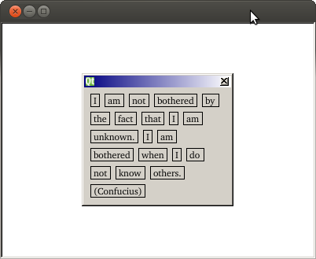

Graphics View Flow Layout Example
Demonstrates flow layout on a graphics view scene.
The Graphics View Flow Layout example shows the use of a flow layout in a Graphics View widget.

See the Flow Layout Example for a corresponding widget-based example.
Files: